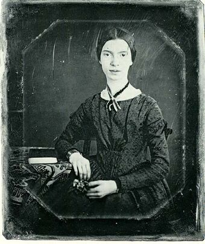

Emily_Dickinson
America’s greatest and most original poets of all time.

an original portait of Emily Dickinson
a timeline of Emily's life
- 1830 - Born in Amherst, Massachusetts
- 1840 - Started education at Amherst Academy
- 1847 - Entered Mount Holyoke Female Seminary (now Mount Holyoke College)
- 1855 - moved,somewhat reluctantly, with her family back to the Homestead
- 1863 - the poet settled into a quiet, reclusive existence with her parents and sister.
- 1886 - She remained in poor health until she died at age 55.
- After her sister's death,Lavinia discovered hundreds of poems that Dickinson had crafted over the years.
- She wrote about 1,800 poems, majority of them in secrecy and with very little of them published
“Faith” is a fine invention
For Gentlemen who see!
But Microscopes are prudent
In an Emergency!
--- Emily Dickinson
Intrested in knowing her more! click here